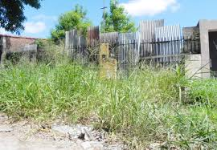
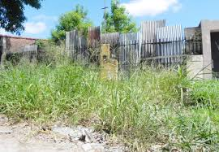

Identidad Visual: Barrio Vivo
Sistema visual, construcción de marca y desarrollo conceptual.

Contexto
Barrio Vivo surge como respuesta a un problema urbano real: calles deterioradas, veredas descuidadas, espacios públicos sin mantenimiento y un bajo nivel de participación vecinal. El proyecto buscaba crear una identidad visual capaz de representar cooperación ciudadana, accesibilidad y acción comunitaria.

 

Objetivo
El objetivo principal era crear una identidad visual capaz de representar la misión social de
“Barrio Vivo”: promover la mejora colectiva del entorno urbano. La tarea consistía en desarrollar
un sistema de marca adaptable y coherente aplicable en entornos digitales e impresos.
• Diseño del logotipo y su construcción modular
• Definición de una paleta cromática accesible
• Selección tipográfica funcional
• Desarrollo de aplicaciones visuales claras y consistentes
El sistema debía transmitir cercanía, participación ciudadana y la idea de transformación comunitaria.

Desarrollo
El desarrollo partió de una idea original: usar la lógica del jenga, donde la estabilidad depende de la unión de las piezas, como inspiración para crear un símbolo de comunidad y colaboración. Desde esa base, se hicieron varias pruebas hasta definir una estructura modular con juego de positivos y negativos, sólida y fácil de reconocer. La paleta de colores se eligió a partir del moodboard y los valores del proyecto, combinando un verde relacionado con la renovación urbana y un naranja que representa la participación activa.
Resultado Final
El proyecto terminó con un sistema de identidad que es coherente y funcional, basado en la metáfora del jenga que enfatiza la unión. El logotipo quedó bien definido y fácil de reconocer, y se adapta a distintos formatos sin perder legibilidad. La selección de la paleta de colores y la tipografía refuerza una estética moderna y accesible, alineada con los valores del proyecto. También se crearon aplicaciones visuales que demuestran la versatilidad del sistema en materiales comunicativos reales. Al final, se elaboró un manual de marca que describen las normas, usos y fundamentos de la identidad.